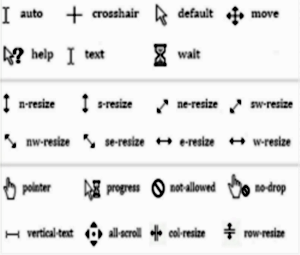

- Встроенный и внешний CSS
- Встроенный
Синтаксис:
< p style="color:#fff; background:#555" >
Стилизованный текст параграфа
< / p >
- Вложенный
Синтаксис:
< html >
< head >
< style type="text/css" >
p {
color:#fff
background:#555
}
< /style >
< /head >
< body >
< p style="color:#fff; background:#555" >
Стилизованный текст параграфа
< / p >
< /body >
< /html >
- Внешний
Синтаксис HTML:
< html >
< head >
< link rel="stylesheet" type="text/css" href="style.css" >
< /head >
< body >
< p style="color:#fff; background:#555" >
Стилизованный текст параграфа
< / p >
< /body >
< /html >
Синтаксис CSS:
p {
color:#fff
background:#555
}
Результат будет один и тот же для всех трех способов
Стилизованный текст параграфа
P.S. Удобнее использовать внешний CSS
- Синтаксис CSS
Каждый CSS документ состоит из трех частей: селектора, свойства и значения
К примеру:
| Пример | Селектор | Значение | Свойство |
| p {color:#fff} | p | color | #fff |
| h1 {width:100px} | h1 | width | 100px |
- Селекторы
Типы селекторов:
| Тип селектора | Синтаксис в HTML | Синтаксис в CSS | Особенность |
| Селектор по типу | Пишется какой-либо тег
К примеру:< p >< /p > | В качестве селектора пишем просто p | Применяется абсолютно ко всем тегам данного типа |
| Селектор идентификаторов | В тег вписывается атрибут id
и дается ему имя
К примеру:< p id=name >< /p > | id обозначаем "#" и пишем имя
В данном случае: #name | Для имени нельзя использовать цифры |
| Селектор классов | В тег вписывается атрибут class
и дается ему имя
К примеру:< p class=name >< /p > | class обозначаем "." и пишем имя
В данном случае: .name | Для имени также нельзя использовать цифры |
- Комментарии в CSS
Синтаксис:
/*Текст комментария*/
- Работа с текстом
- Шрифт
| Значение | Описание | Свойство |
| font-family | Устанавливает стиль шрифта | Любое количество имен шрифтов разделенных запятыми. Универсальные семейства шрифтов:
serif - шрифты с засечками (антиквенные), типа Times;
sans-serif - рубленные шрифты (шрифты без засечек или гротески), типичный представитель - Arial;
cursive - курсивные шрифты;
fantasy - декоративные шрифты;
monospace - моноширинные шрифты, ширина каждого символа в таком семействе одинакова (шрифт Courier).
inherit - наследует значение родителя. |
| font-size | Устанавливает размер шрифта | Указывается в px, em или ключевых словах |
| font-style | Применяется для курсивного начертания текста | normal | italic | oblique | inherit |
| font-weight | Устанавливает насыщенность шрифта. | От 100 до 900 с шагом 100 |
| font-variant | Позволяет конвертировать шрифт в маленькие заглавные буквы | normal | small-caps | inherit |
- Цвет
Синтаксис:
color:#fff
- Расположение текста по горизонтали
Синтаксис:
text-align:left | center | right | justify
- Расположение текста по вертикали
Синтаксис:
vertical-align:top | middle | bottom
*на странице или в таблице
Синтаксис:
vertical-align:baseline | sub | super | px, %
*в строке
- text-decoration
Определяет, как будет декорирован текст
Наиболее часто использованные значения:
none - нормальный текст
blink - мигающий текст
inherit - наследует свойство от родительского элемента
overline - горизонтальная линия над текстом
underline - горизонтальная линия под текстом
line-throudh - горизонтальная линия сквозь текст
- отступы в тексте
Синтаксис:
text-indent:px, em, %
- Тень текста
Синтаксис:
text-shadow:x, y, размытие, цвет
- Интервал между символами
Синтаксис:
letter-spacing: normal | px, em
- Интервал между словами
Синтаксис:
word-spacing: normal | px, em
- Отображение пробелов и переносов
Синтаксис:
white-space: normal | inherit | nowrap (стандартное значение) | pre (сохраняются все пробелы и переносы)
| pre-line (сохраняются только переносы) | pre-wrap (сохраняются пробелы и переносы)
- Рамка, ширина, высота
Рамка:
border: толщина стиль цвет
Некоторые стили:
solid - одинарная
double - двойная
dotted - точечная
dashed - пунктирная
Ширина:
width: px, em, mm, %
Высота:
height: px, em, mm, %
- Фон
Цвет:
background-color: цвет
Изображение:
background-image: url(путь к изображению)
Повтор:
background-repeat: repeat-x | repeat-y | no-repeat | inherit
Прокрутка:
background-attachment: fixed | scroll | inherit
Линейный градиент:
background: linear-gradient(направление, первый цвет, второй цвет, третий цвет ...)
Радиальный градиент:
background: radial-gradient(координаты центра окружности, первый цвет, второй цвет, третий цвет ...)
Размер:
background-size:x px y px
Область изображения фона:
background-clip: border-box | padding-box | content-box
- Списки, таблицы, ссылки, курсор
Списки:
list-style-type: circle | square | decimal | disc | lower-alpha | ...
list-style-image: url()
list-style-position: inside | outside
Таблицы:
border-collapse - определяет будет у каждой ячейки своя рамка или общая
border-spacing - изменяет расстояние между рамкой ячейки и таблицы
caption-side - определяет положение заголовка таблицы
empty-cells - определяет отображать или нет рамки и фон пустых ячеек
table-layout - определяет ширину ячеек
Ссылки:
a:link - определяет стиль не посещенной ссылки
a:visited - определяет стиль посещенной ссылки
a:active - ссылка становится активной при нажатии на нее
a:hover - активируется, когда курсор находится в пределах элемента
Курсор:
cursor: стиль курсора
Стили курсора:

- Позиционирование и разметка
display:
Свойства:
blok - создает из любого элемента элемент блочного типа
inline - создает из любого элемента элемент строчного типа
none - делает любой элемент невидимым для воспроизведения
visibility:
Свойства:
visible - делает элемент видимым
hidden - скрывает элемент, но ,в отличии от display:none, элемент становится невидимым, но места он занимает на странице столько же,
а в display:none места под элемент не выделяется
Позиционирование:
position: static | fixed | relative | absolute
Свойства:
static - значение по умолчанию
fixed - элемент фиксируется на странице, остальные элементы ведут себя так, будто этого элемента нет, элемент не прокручивается,
выставляется при помощи top, right, bottom, left
relative - элемент меняет свое положение относительно своего первоначального положения при помощи top, right, bottom, left
absolute - элемент меняет свое положение относительно своего родительного элемента при помощи top, right, bottom, left
Обтекание:
float: указывается значение, с какой стороны необходимо позиционировать элемент
(элемент будет обтекаем)
float: left | right | none
clear:
clear: указывается значение, с какой стороны нельзя обтекать элемент
clear: leaft | right | both | none
overflow:
Свойства:
visible - содержимое выходит за пределы элемента
scroll - добавляется прокрутка в элементе
hidden - видна только та часть контента, которая поместилась в элемент
auto - добавляется прокрутка, если она необходима
z-index:
Отвечает за то, какой элемент отображается поверх какого.
Значение указывается в цифрах (у кого значение больше, тот и поверх меньшего)
- Нововведения в CSS3
Вендорные префиксы:
-moz- - Firefox
-webkit- - Chrome, Safari
-o- - Opera
-ms- - Internet Explorer
Закругленные углы:
border-radius: px | em | cm | mm
Тень:
box-shadow: x px y px размытие px растяжение px цвет
P.S. при добавлении перед x ключевого слова inset можно задать внутреннюю тень
Эффект прозрачности:
Для этого необходимо использовать задание цвета через систему rgba()
и через запятую указать значения красного, зеленого, синего цветов
и коэффициента прозрачности где 0-полсностью прозрачный, а 1 полностью видимый
ИЛИ
opacity: от 0 до 1
Псевдоклассы:
:first-child - первый элемент в данном родителе
:last-child - последний элемент в данном родителе
Псевдоэлементы:
::first-line - первая строка текста селектора
::first-letter - первая буква текста селектора
::selection - выбирает часть текста, которая указана пользователем
::before - вставляет некоторое содержимое до текста
::after - вставляет некоторое содержимое после текста
word-wrap:
Свойства:
normal - стандартное значение
break-word - позволяет разбивать слова и переносить их на следующую строку
@font-face:
Правило, позволяющее загружать специальные шрифты на веб-страницу
- Переходы и трансформации
Переходы:
Значения
transition-property - указывает свойство, к которому будет применен переход
transition-duration - определяет продолжительность, в течение которой произойдет переход
transition-timing-function - определяет, как будет изменяться темп перехода во время его продолжительности
( ease | ease-in | ease-put | ease-in-out | linear | cubic-bezier() )
transition-delay - определяет задержку (в секундах) для эффекта перехода
Трансформация:
transform: свойство
Свойства:
rotate(deg) - поворот
translate(x y) - перемещение элемента
skew(x deg y deg) - наклоняет элемент
scale(x y) - масштабирует элемент 1-100%
Анимация:
Задается анимация правилом @keyframes после указывается имя анимации, после в фигурных скобках описывается действие анимации
Пример:
@keyframes colorchange {
{background:#f00}0%
{background:#0f0}100%
}
div {
width:100px
height:100px
background:#f00
animation-name:colorchange
animation-duration:1s
}
Свойства:
animation-iteration-count - количество повторов (infinite - бесконечно)
animation-direction - как ключевой кадр должен быть применен (normal | reverse | alternate | ...)